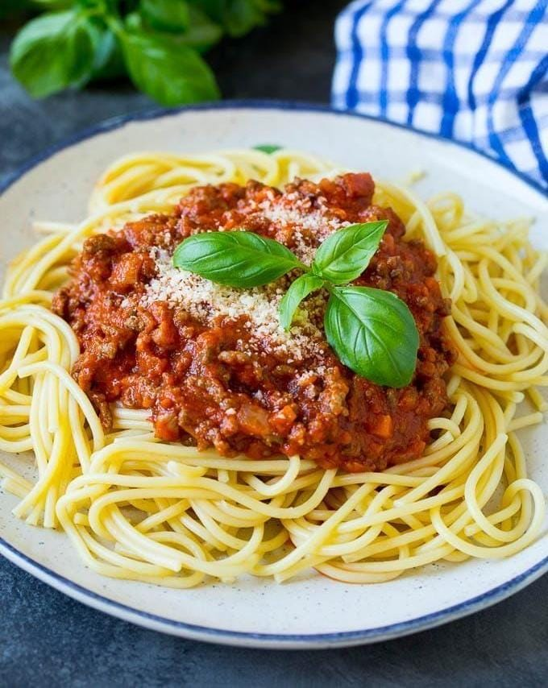

Lava y pica la cebolla, el ajo, la zanahoria y el apio.
Posteriormente tritura los tomates.
En una olla grande con 4–5 litros de agua una cucharada de sal.
Cuando hierva el agua anade
el espagueti y dejalo cocinar de 8 a 10 minutos(según el paquete).
Y por último escurrelo y reserva
En una sartén grande, calienta 2 cucharadas de aceite de oliva y anade la cebolla y sofrie de 2 a 3 minutos.
Por otro lado agrega el ajo, la zanahoria y el apio y cocina de 3 a 4 minutos hasta que esten blanditos.
Incorpora la carne molida a la sarten y cocina a fuego medio-alto, desmenuzandola con la cuchara, hasta que quede bien dorada y sin ningun liquido de 6 a 8 minutos.
Agrega sal y pimienta al gusto.
Para la salsa anade los tomates triturados y la pasta de tomate e incorpora la hoja de laurel y el oregano .
Por último baja el fuego y deja cocinar por 20 a 30 minutos a fuego lento, moviendo de vez en cuando.
Despues mezcla el espagueti con la salsa en el sarten o también puedes serve la salsa encima.
Por ultimo cocina de 1 a 2 minutos juntos para que la pasta absorba los sabores y asi quede lista.
Y por ultimo paso sirve la pasta en platos hondos.
Y espolvorea con su queso de preferencia rallado por encima.

SPAGUETTI A LA BOLANESA
Rica y deliciosa pasta banada en salasa de jitomte y carne molida